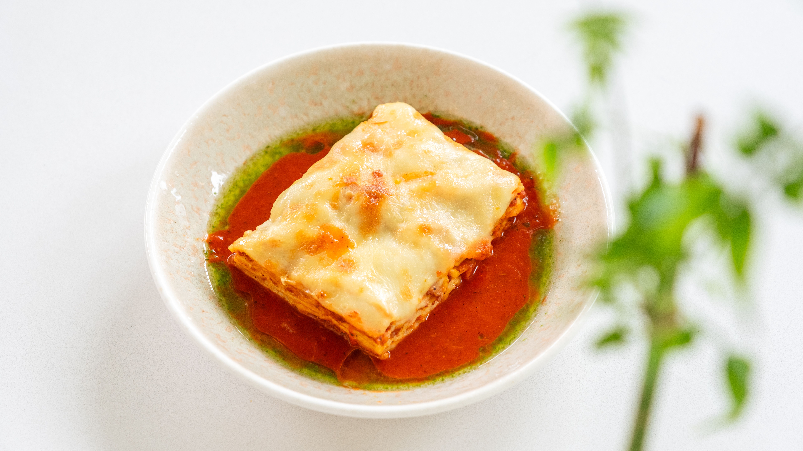

Home
lasagna

Description
This is a hearty, delicious homemade lasagna layered with rich meat sauce, melted cheese, and tender pasta sheets.
Ingredients
- 1 pound sweet Italian sausage
- ¾ pound lean ground beef
- ½ cup minced onion
- 2 cloves garlic, crushed
- 1 (28 ounce) can crushed tomatoes
- 2 (6.5 ounce) cans canned tomato sauce
- 2 (6 ounce) cans tomato paste
- ½ cup water
- 2 tablespoons white sugar
- 4 tablespoons chopped fresh parsley, divided
- 1 ½ teaspoons dried basil leaves
- 1 ½ teaspoons salt, divided, or to taste
- 1 teaspoon Italian seasoning
- ½ teaspoon fennel seeds
- ¼ teaspoon ground black pepper
- 12 lasagna noodles
- 16 ounces ricotta cheese
- 1 large egg
- ¾ pound mozzarella cheese, sliced
- ¾ cup grated Parmesan cheese
Steps
- Make the meat sauce: In a Dutch oven, cook sausage, ground beef, onion, and garlic over medium heat until well browned. Stir in crushed tomatoes, tomato sauce, tomato paste, and water. Season with sugar, 2 tablespoons parsley, basil, 1 teaspoon salt, Italian seasoning, fennel seeds, and pepper. Simmer, covered, for about 1.5 hours, stirring occasionally.
- Cook the noodles: Bring a large pot of lightly salted water to a boil. Cook lasagna noodles in boiling water for 8 to 10 minutes. Drain noodles, and rinse with cold water.
- Mix the cheese: In a mixing bowl, combine ricotta cheese with egg, remaining 2 tablespoons parsley, and ½ teaspoon salt.
- Preheat the oven: Preheat oven to 375 degrees F (190 degrees C).
- Assemble the lasagna: To assemble, spread 1.5 cups of meat sauce in the bottom of a 9x13-inch baking dish. Arrange six noodles lengthwise over meat sauce. Spread with one half of the ricotta cheese mixture. Top with a third of the mozzarella cheese slices. Spoon 1.5 cups meat sauce over mozzarella, and sprinkle with ¼ cup Parmesan cheese. Repeat layers, and top with remaining mozzarella and Parmesan cheese.
- Bake: Cover with foil: to prevent sticking, either spray foil with cooking spray or make sure the foil does not touch the cheese. Bake in preheated oven for 25 minutes. Remove foil, and bake an additional 25 minutes.
- Rest and serve: Cool for 15 minutes before slicing and serving.